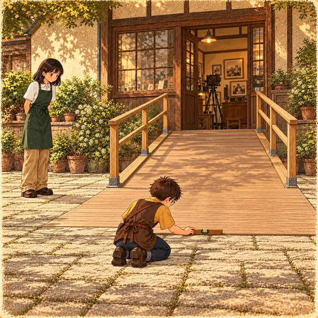
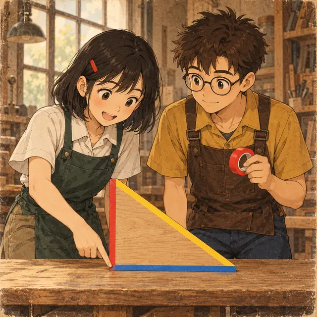

課前暖身漫畫：量不到的大樹
照相館門口的大樹要入鏡，客人想知道它有多高。阿光抱著捲尺仰頭看——爬不上去，量不到。小影指著地上的影子：同一時刻，人和樹的影子跟著陽光一起斜斜躺在地上。量自己的身高和影長，再量樹的影長，相似三角形就會告訴你樹有多高。兩千多年前，泰勒斯就是這樣量出金字塔的高度。
重點 1：利用影子測高（陽光與路燈）
重點整理與敘述
- 太陽離地球非常遠，陽光可以看成平行光。同一時刻，直立的物體和它的影子圍成直角三角形，光線與地面的夾角都一樣，所以這些直角三角形相似（AA）。
- 於是 身高 : 物高 = 人影 : 物影。例如身高 160 公分的人影長 200 公分，同時樹影長 5 公尺：先統一單位 \(1.6 : x = 2 : 5\)，得樹高 \(x = 4\) 公尺。
- 路燈是從一點射出的光，不是平行光：燈泡、頭頂、影子尖端三點在同一直線上。人和燈柱的兩個直角三角形共用影子尖端那個角（A 字型）。
- 路燈題對應的是「人到燈柱的距離 + 影長」那一整段，不是只有人到燈柱。
路燈：身高 : 燈高 = 影長 : (人到燈柱 + 影長)
視覺互動探索：影長測高台
選光源是陽光還是路燈，調整身高與各段長度，看兩個直角三角形怎麼相似、比例式要怎麼列：求的是樹高（或燈高）\(x\)。
形成性評量 (影子測高)
Q1. 身高 144 公分的弟弟在陽光下的影長是 1.2 公尺，同一時刻，旁邊旗桿的影長是 7.5 公尺。旗桿高多少公尺？
解析：答案為 B。144 公分 = 1.44 公尺。陽光平行，兩個直角三角形相似，身高對旗桿高、人影對旗桿影：
\[\begin{aligned} & 1.44 : x = 1.2 : 7.5 \\ & 1.2x = 10.8,\ x = 9 \end{aligned}\]
A 錯：比例式前後對調了，\(1.2 : x = 1.44 : 7.5\) 算出 6.25。
C 錯：把 144 公分直接當 144 代入，算出來的 900 其實是公分。
D 錯：以為「差多少就加多少」：\(1.44 - 1.2 = 0.24\)、\(7.5 + 0.24 = 7.74\)。相似要用比例（乘倍數），不是加減。
Q2. 夜晚，身高 1.5 公尺的小影站在離路燈燈柱 4 公尺的地方，她的影子長 2.5 公尺（影子朝遠離燈柱的方向）。路燈的燈泡離地面多高？
解析：答案為 D。燈泡、頭頂、影子尖端在同一直線上，人和燈柱共用影子尖端的角。燈柱腳到影子尖端是 \(4 + 2.5 = 6.5\) 公尺：
\[\begin{aligned} & 1.5 : x = 2.5 : 6.5 \\ & 2.5x = 9.75,\ x = 3.9 \end{aligned}\]
A 錯：拿人到燈柱的 4 公尺去對應，\(1.5 : x = 2.5 : 4\) 得 2.4，少了影長那一段。
B 錯：6.5 公尺是燈柱腳到影子尖端的距離，不是燈高。
C 錯：\(1.5 + 2.5 = 4\) 只是把身高和影長相加，沒有用到相似。
重點 2：在岸邊造一個小三角形，量出河寬
重點整理與敘述
- 河寬過不去量，就在自己這一岸造一個與它相似的小三角形，用量得到的邊去推量不到的邊。
- 站在 \(A\) 正對著對岸的 \(B\)，沿著與 \(\overline{AB}\) 垂直的河岸走到 \(C\)，再繼續走到 \(D\)；從 \(D\) 朝離開河的方向直走到 \(E\)，使 \(B\)、\(C\)、\(E\) 在同一直線上。
- \(\overline{AB} \perp \overline{AD}\)、\(\overline{DE} \perp \overline{AD}\)，所以 \(\overline{AB} /\!/ \overline{DE}\)，\(\angle B = \angle E\)（內錯角）；又 \(\angle A = \angle D = 90^\circ\)，得 \(\triangle ABC \sim \triangle DEC\)（AA 相似）。
- 課本的例子：走 20 步到 \(C\)、再 5 步到 \(D\)，量得 \(\overline{DE} = 2\) 公尺：\(\overline{AB} : 2 = 20 : 5\)，河寬 8 公尺。每一步一樣長，步數的比就是距離的比。
視覺互動探索：岸邊測距台
調整走到 \(C\)、再走到 \(D\) 的步數，以及 \(\overline{DE}\) 的長度，看兩個三角形為什麼相似、河寬 \(\overline{AB}\) 是多少公尺。
形成性評量 (測河寬)
Q3. 用重點 2 的方法測河寬：從 \(A\) 沿河岸走 45 步到 \(C\)，再走 6 步到 \(D\)，從 \(D\) 往離開河的方向走到 \(E\)，使 \(B\)、\(C\)、\(E\) 共線，量得 \(\overline{DE} = 1.6\) 公尺。每一步一樣長，河寬 \(\overline{AB}\) 是多少公尺？
解析：答案為 A。\(\triangle ABC \sim \triangle DEC\)，\(\overline{AB}\) 對 \(\overline{DE}\)、\(\overline{CA}\) 對 \(\overline{CD}\)：
\[\begin{aligned} & \overline{AB} : 1.6 = 45 : 6 \\ & 6\,\overline{AB} = 72,\ \overline{AB} = 12 \end{aligned}\]
B 錯：用了整段 \(\overline{AD} = 51\) 步去對應，\(1.6 \times 51 \div 6 = 13.6\)；對應 \(\overline{CD}\) 的是 \(\overline{CA}\)。
C 錯：\(1.6 \times 6 = 9.6\)，把比例的前後項放反了。
D 錯：\(1.6 \times 45 = 72\)，交叉相乘之後忘了除以 6。
Q4. 河寬 \(\overline{AB}\) 已知是 9 公尺。小翊照重點 2 的方法，從 \(A\) 沿河岸走 30 步到 \(C\)，打算再走到 \(D\) 後轉身，走到 \(E\) 時讓 \(B\)、\(C\)、\(E\) 共線，而且 \(\overline{DE}\) 剛好是 1.2 公尺。\(\overline{CD}\) 應該走幾步？
解析：答案為 C。比例式一樣是 \(\overline{AB} : \overline{DE} = \overline{CA} : \overline{CD}\)，這次未知的是 \(\overline{CD}\)：
\[\begin{aligned} & 9 : 1.2 = 30 : \overline{CD} \\ & 9\,\overline{CD} = 36,\ \overline{CD} = 4 \end{aligned}\]
A 錯：\(30 \times 9 \div 1.2 = 225\)，把 \(\overline{CD}\) 當成和 \(\overline{AB}\) 對應。
B 錯：\(9 \times 1.2 \div 30 = 0.36\)，比例式的項放錯位置。
D 錯：\(9 \div 1.2 = 7.5\) 只是河寬是 \(\overline{DE}\) 的幾倍，還要用它去除 \(\overline{CA}\)。
重點 3：未知數藏在「一段和」裡
重點整理與敘述
- 有時要求的那一段，只是相似三角形某一邊的一部分。這時設它為 \(x\)，把整條邊寫成「已知 + \(x\)」或「總長 \(-\ x\)」，再列比例式。
- A 字型（共用一個角）：課本的湖邊測量，\(\angle B = \angle CDE = 90^\circ\)、\(\angle E\) 共用，\(\overline{AB} = 10\)、\(\overline{CD} = 4\)、\(\overline{BD} = 9\)。設河寬 \(\overline{DE} = x\)： \[\begin{aligned} & 10 : 4 = (9 + x) : x \\ & 10x = 36 + 4x,\ x = 6 \end{aligned}\]
- X 字型（對頂角）：尋寶題 \(\overline{BD} = 21\) 是兩段的和。設 \(\overline{BC} = x\)，則 \(\overline{CD} = 21 - x\)，由 \(10 : 4 = x : (21 - x)\) 得 \(x = 15\)。
- 交叉相乘之後，要把 \(x\) 移到同一邊再解。
視覺互動探索：一段和的比例式
選 A 字型或 X 字型，調整兩個直角邊與已知的那一段，看「整條邊」怎麼寫成含 \(x\) 的式子、方程式怎麼解。
形成性評量 (一段和)
Q5. 如圖，\(\angle B = \angle CDE = 90^\circ\)，\(A\)、\(C\)、\(E\) 共線，\(B\)、\(D\)、\(E\) 共線。量得 \(\overline{AB} = 14\) 公尺、\(\overline{CD} = 12\) 公尺、\(\overline{BD} = 2\) 公尺，河寬 \(\overline{DE}\) 是多少公尺？
解析：答案為 C。\(\angle E\) 共用、\(\angle B = \angle CDE = 90^\circ\)，\(\triangle ABE \sim \triangle CDE\)。設 \(\overline{DE} = x\)，則 \(\overline{BE} = 2 + x\)：
\[\begin{aligned} & 14 : 12 = (2 + x) : x \\ & 14x = 24 + 12x,\ x = 12 \end{aligned}\]
A 錯：拿 \(\overline{BD} = 2\) 去對應，\(14 : 12 = 2 : x\) 得 \(\frac{12}{7}\)；\(\overline{BD}\) 不是三角形的一邊。
B 錯：\(14 : 12 = x : 2\) 得 \(\frac{7}{3}\)，對應的邊放反了。
D 錯：\(14 - 12 = 2\)，相似要用比例，不是相減。
Q6. 如圖，\(\angle B = \angle D = 90^\circ\)，\(B\)、\(C\)、\(D\) 共線，\(A\)、\(C\)、\(E\) 共線。已知 \(\overline{AB} = 15\)、\(\overline{DE} = 12\)、\(\overline{BD} = 27\)，\(\overline{BC}\) 是多少？
解析：答案為 A。\(\angle ACB = \angle ECD\)（對頂角），又 \(\angle B = \angle D = 90^\circ\)，\(\triangle ABC \sim \triangle EDC\)。設 \(\overline{BC} = x\)，則 \(\overline{CD} = 27 - x\)：
\[\begin{aligned} & 15 : 12 = x : (27 - x) \\ & 12x = 405 - 15x \\ & 27x = 405,\ x = 15 \end{aligned}\]
B 錯：12 是 \(\overline{CD}\) 的長。
C 錯：\(27 \div 2 = 13.5\)，以為 \(C\) 是中點。
D 錯：\(15 : 12 = x : 27\)，把整段 \(\overline{BD}\) 當成 \(\overline{CD}\)。
重點 4：對應高的比 = 對應邊的比
重點整理與敘述
- \(\triangle ABC \sim \triangle DEF\)，\(\overline{AP}\)、\(\overline{DQ}\) 分別是 \(\overline{BC}\)、\(\overline{EF}\) 上的高。
- 因為 \(\angle B = \angle E\)，又 \(\angle APB = \angle DQE = 90^\circ\)，所以 \(\triangle ABP \sim \triangle DEQ\)（AA 相似），得 \(\overline{AP} : \overline{DQ} = \overline{AB} : \overline{DE}\)。
- 反過來，知道高的比也就知道邊的比。例如 \(\overline{CM}\)、\(\overline{FN}\) 是 \(\overline{AB}\)、\(\overline{DE}\) 上的高，\(\overline{CM} : \overline{FN} = 3 : 2\)、\(\overline{BC} = 12\)：\(12 : \overline{EF} = 3 : 2\)，\(\overline{EF} = 8\)。
- 同樣的道理，對應中線、對應角平分線的比，也都等於對應邊的比。
視覺互動探索：對應線段量量看
選要比較的對應線段（高、中線或角平分線），調整兩個三角形的邊長比與形狀，量出來的比和邊的比一樣嗎？
形成性評量 (對應高)
Q7. \(\triangle ABC \sim \triangle DEF\)，\(A\)、\(B\)、\(C\) 的對應點分別是 \(D\)、\(E\)、\(F\)。\(\overline{CM}\)、\(\overline{FN}\) 分別是 \(\overline{AB}\)、\(\overline{DE}\) 上的高，\(\overline{CM} : \overline{FN} = 7 : 4\)。若 \(\overline{AB} = 21\)，\(\overline{DE}\) 是多少？
解析：答案為 D。對應高的比等於對應邊的比，\(\overline{AB} : \overline{DE} = \overline{CM} : \overline{FN} = 7 : 4\)：
\[\begin{aligned} & 21 : \overline{DE} = 7 : 4 \\ & 7\,\overline{DE} = 84,\ \overline{DE} = 12 \end{aligned}\]
A 錯：\(21 \times \frac{7}{4} = \frac{147}{4}\)，倍數乘反了；\(\triangle DEF\) 比較小。
B 錯：\(21 \times \frac{16}{49} = \frac{48}{7}\)，把邊長比平方了；平方是面積比才要做的。
C 錯：\(21 - (7 - 4) = 18\)，相似要用比例，不是相減。
Q8. \(\triangle ABC \sim \triangle DEF\)，\(A\)、\(B\)、\(C\) 的對應點分別是 \(D\)、\(E\)、\(F\)，\(\overline{AB} = 6\)、\(\overline{DE} = 9\)。\(\overline{AP}\) 是 \(\triangle ABC\) 的高、\(\overline{AP} = 4\)，那麼 \(\triangle DEF\) 的對應高 \(\overline{DQ}\) 是多少？
解析：答案為 B。\(\overline{AP} : \overline{DQ} = \overline{AB} : \overline{DE}\)：
\[\begin{aligned} & 4 : \overline{DQ} = 6 : 9 \\ & 6\,\overline{DQ} = 36,\ \overline{DQ} = 6 \end{aligned}\]
A 錯：\(4 \times \frac{6}{9} = \frac{8}{3}\)，倍數乘反了；\(\triangle DEF\) 比較大，高也比較長。
C 錯：\(9 - 6 = 3\)，\(4 + 3 = 7\)，相似要用比例，不是加減。
D 錯：高和邊是不同的線段，\(\overline{DQ}\) 不會等於 \(\overline{DE}\)。
重點 5：面積的比 = 對應邊長平方的比
重點整理與敘述
- \(\triangle ABC \sim \triangle DEF\)，對應邊的比是 \(a : b\)，對應高的比也是 \(a : b\)。面積是 \(\frac{1}{2} \times\) 底 \(\times\) 高，底和高都變，所以面積比是 \(a^2 : b^2\)。
- 例：\(\overline{AH} : \overline{DK} = 3 : 2\)（對應高），\(\triangle ABC\) 的面積是 18。設 \(\triangle DEF\) 的面積是 \(y\)： \[\begin{aligned} & 18 : y = 3^2 : 2^2 \\ & 9y = 72,\ y = 8 \end{aligned}\]
- 反過來，已知面積比求邊長比要開根號：面積比 \(9 : 25\) 的邊長比是 \(3 : 5\)；面積比 \(1 : 5\) 的邊長比是 \(1 : \sqrt{5}\)，不是 \(1 : 5\)。
- 袖珍博物館的娃娃屋照實物的 \(\frac{1}{12}\) 製作：長度是 \(\frac{1}{12}\)，地板面積只有實物的 \(\frac{1}{144}\)。
視覺互動探索：數一數小三角形
「邊長比 → 面積比」：調整兩個三角形的邊長份數，數一數各被切成幾塊小三角形。「面積比 → 邊長比」：選一組面積比，看邊長比要怎麼求。
形成性評量 (面積比)
Q9. \(\triangle ABC \sim \triangle DEF\)，\(\overline{AH}\)、\(\overline{DK}\) 是對應高，\(\overline{AH} : \overline{DK} = 6 : 5\)。若 \(\triangle ABC\) 的面積是 72，\(\triangle DEF\) 的面積是多少？
解析：答案為 A。對應高的比 = 對應邊的比 = \(6 : 5\)，面積比是 \(6^2 : 5^2 = 36 : 25\)：
\[\begin{aligned} & 72 : y = 36 : 25 \\ & 36y = 1800,\ y = 50 \end{aligned}\]
B 錯：\(72 \times \frac{5}{6} = 60\)，面積比忘了平方。
C 錯：\(72 \times \frac{6}{5} = 86.4\)，沒有平方，倍數也乘反了。
D 錯：\(72 \times \frac{36}{25} = 103.68\)，有平方但乘反了；\(\triangle DEF\) 比較小。
Q10. 如圖，三角形紙片 \(ABC\) 中，\(D\)、\(E\)、\(F\) 由 \(A\) 往 \(B\) 依序把 \(\overline{AB}\) 分成四等分。從 \(\overline{AB}\) 上的一點 \(P\)，沿著與 \(\overline{BC}\) 平行的方向剪開，剪下的小三角形面積剛好是 \(\triangle ABC\) 的 \(\frac{1}{2}\)。\(P\) 點在哪裡？
解析：答案為 C。剪下的小三角形與 \(\triangle ABC\) 相似（AA），面積比 \(1 : 2\)，邊長比就是 \(1 : \sqrt{2}\)：
\[\overline{AP} = \frac{1}{\sqrt{2}}\,\overline{AB} \fallingdotseq 0.71\,\overline{AB}\]
\(\overline{AE} = 0.5\,\overline{AB}\)、\(\overline{AF} = 0.75\,\overline{AB}\)，所以 \(P\) 在 \(E\)、\(F\) 之間。
A 錯：以為邊長比也是 \(1 : 2\)；剪在 \(E\) 的面積只有 \(\left(\frac{1}{2}\right)^2 = \frac{1}{4}\)。
B 錯：剪在 \(D\)、\(E\) 之間，面積還不到 \(\frac{1}{4}\)。
D 錯：剪在 \(F\) 的面積是 \(\left(\frac{3}{4}\right)^2 = \frac{9}{16}\)，比一半多。
重點 6：先找對應邊，再算面積比
重點整理與敘述
- 兩個相似三角形擺放的方向不同時，要照角找對應，不要照位置找：直角對直角、共用角對共用角，剩下的頂點自然配成一對。
- 例：\(\triangle ABC\) 中 \(\angle A = 90^\circ\)、\(\overline{AB} = 8\)、\(\overline{AC} = 6\)，\(D\) 是 \(\overline{AB}\) 的中點，\(\overline{DE} \perp \overline{BC}\) 於 \(E\)。\(\angle B\) 共用、\(\angle DEB = \angle A = 90^\circ\)，所以 \(\triangle EBD \sim \triangle ABC\)，\(E\) 對 \(A\)、\(D\) 對 \(C\)。
- \(\overline{BD}\) 是小三角形的斜邊，要對大三角形的斜邊 \(\overline{BC} = 10\)：面積比 \(= 4^2 : 10^2 = 4 : 25\)。拿 \(\overline{BD} : \overline{AB} = 1 : 2\) 算出 \(1 : 4\) 是常見的錯。
- 平行四邊形裡也常藏著相似三角形：對邊平行，內錯角相等，再加上對頂角。
視覺互動探索：誰對誰？
選一個直角三角形和 \(D\) 的位置，看 \(\triangle EBD\) 與 \(\triangle ABC\) 的對應頂點（同色）；切到「小妍的錯法」，比較兩種面積比哪裡不一樣。
形成性評量 (找對應邊)
Q11. 如圖，四邊形 \(ABCD\) 是平行四邊形，\(E\) 在 \(\overline{AD}\) 上，\(\overline{BE}\) 的延長線與 \(\overline{CD}\) 的延長線交於 \(F\)。若 \(\overline{BC} = 18\)、\(\overline{DE} = 12\)，\(\triangle ABE\) 面積 : \(\triangle DFE\) 面積 = ？
解析：答案為 B。\(\overline{AB} /\!/ \overline{CF}\)，所以 \(\angle ABE = \angle DFE\)（內錯角）；又 \(\angle AEB = \angle DEF\)（對頂角），\(\triangle ABE \sim \triangle DFE\)，\(\overline{AE}\) 對 \(\overline{DE}\)。\(\overline{AD} = \overline{BC} = 18\)，\(\overline{AE} = 18 - 12 = 6\)：
\[\begin{aligned} & \triangle ABE : \triangle DFE \\ &= 6^2 : 12^2 = 1 : 4 \end{aligned}\]
A 錯：\(6 : 12 = 1 : 2\) 是邊長比，面積比要平方。
C 錯：拿 \(\overline{AE} : \overline{AD} = 6 : 18\) 去平方；\(\overline{AD}\) 不是 \(\triangle DFE\) 的邊。
D 錯：前後對調了，\(\triangle ABE\) 比較小。
Q12. 如圖，\(\triangle ABC\) 中 \(\angle A = 90^\circ\)、\(\overline{AB} = 16\)、\(\overline{AC} = 12\)，\(D\) 在 \(\overline{AB}\) 上且 \(\overline{BD} = 4\)，\(\overline{DE} \perp \overline{BC}\) 於 \(E\)。\(\triangle EBD\) 的面積是 \(\triangle ABC\) 面積的幾倍？
解析：答案為 D。\(\angle B\) 共用、\(\angle DEB = \angle A = 90^\circ\)，\(\triangle EBD \sim \triangle ABC\)，\(D\) 對 \(C\)，所以 \(\overline{BD}\) 對 \(\overline{BC}\)。\(\overline{BC} = \sqrt{16^2 + 12^2} = 20\)：
\[\begin{aligned} & \triangle EBD : \triangle ABC \\ &= 4^2 : 20^2 = 1 : 25 \end{aligned}\]
A 錯：\(\overline{BD} : \overline{AB} = 4 : 16\)，照位置配對，\(\overline{BD}\) 對錯了邊。
B 錯：\(4 : 20 = 1 : 5\) 是邊長比，面積比要平方。
C 錯：\(\overline{BD} : \overline{AC} = 4 : 12\)，也是對錯了邊。
重點 7：三角形各邊中點連線段
重點整理與敘述
- \(\triangle ABC\) 中，\(D\)、\(E\)、\(F\) 分別是 \(\overline{BC}\)、\(\overline{AC}\)、\(\overline{AB}\) 的中點。由兩邊中點連線段性質，\(\overline{EF} = \frac{1}{2}\overline{BC}\)、\(\overline{DF} = \frac{1}{2}\overline{AC}\)、\(\overline{DE} = \frac{1}{2}\overline{AB}\)，所以 \(\triangle DEF \sim \triangle ABC\)（SSS 相似）。
- 邊長比 \(1 : 2\)，所以 \(\triangle DEF\) 的周長是 \(\triangle ABC\) 的 \(\frac{1}{2}\)，面積是 \(\left(\frac{1}{2}\right)^2 = \frac{1}{4}\)——三條中點連線把 \(\triangle ABC\) 切成 4 個全等的小三角形。
- 例：\(\overline{DE} = 3\)、\(\overline{DF} = 4\)、\(\angle FDE = 90^\circ\)，則 \(\overline{EF} = 5\)，\(\triangle DEF\) 周長 12、面積 6；\(\triangle ABC\) 周長 24、面積 24。
- 再連一次 \(\triangle DEF\) 的中點，周長再乘 \(\frac{1}{2}\)、面積再乘 \(\frac{1}{4}\)。
視覺互動探索：一層一層往內連
設定 \(\triangle ABC\) 的周長與面積，選要往內連幾層中點，看每一層的周長、面積，和所有線段的總長。
形成性評量 (中點連線)
Q13. \(\triangle ABC\) 中，\(D\)、\(E\)、\(F\) 分別是 \(\overline{BC}\)、\(\overline{AC}\)、\(\overline{AB}\) 的中點。已知 \(\overline{DE} = 8\)、\(\overline{DF} = 15\)、\(\angle FDE = 90^\circ\)，\(\triangle ABC\) 的周長與面積分別是多少？
解析：答案為 A。\(\overline{EF} = \sqrt{8^2 + 15^2} = 17\)，\(\triangle DEF\) 周長 \(8 + 15 + 17 = 40\)，面積 \(\frac{1}{2} \times 8 \times 15 = 60\)。\(\triangle ABC\) 的邊是 \(\triangle DEF\) 的 2 倍：
\[\begin{aligned} & \text{周長} = 2 \times 40 = 80 \\ & \text{面積} = 4 \times 60 = 240 \end{aligned}\]
B 錯：面積只乘 2；邊長 2 倍，面積要乘 \(2^2 = 4\)。
C 錯：周長也乘了 4；周長只跟邊長一樣變 2 倍。
D 錯：這是 \(\triangle DEF\) 自己的周長與面積。
Q14. \(\triangle ABC\) 是邊長 16 的正三角形，\(D\)、\(E\)、\(F\) 是三邊的中點，\(G\)、\(H\)、\(I\) 是 \(\triangle DEF\) 三邊的中點。把 \(\triangle ABC\)、\(\triangle DEF\)、\(\triangle GHI\) 的邊全部畫出來，圖中所有線段的長度和是多少？
解析：答案為 C。每往內一層，周長乘 \(\frac{1}{2}\)：\(\triangle ABC\) 周長 \(3 \times 16 = 48\)、\(\triangle DEF\) 是 24、\(\triangle GHI\) 是 12，
\[48 + 24 + 12 = 84\]
A 錯：\(48 + 24 = 72\)，漏了最內層 \(\triangle GHI\)。
B 錯：\(48 + 12 + 3 = 63\)，把周長也乘 \(\frac{1}{4}\)；乘 \(\frac{1}{4}\) 的是面積。
D 錯：\(48 + 24 + 24 = 96\)，以為第三層的周長和第二層一樣。
重點 8：角度固定，任兩邊的比就固定
重點整理與敘述
- 無障礙坡道規定：高度差超過 20 公分時，坡度 = \(\frac{\text{高度差}}{\text{水平長度}}\) 不可大於 \(\frac{1}{12}\)。坡度 \(\frac{1}{12}\) 時，高度差 20 公分要配水平長度 240 公分，高度差 30 公分要配 360 公分。
- 坡度固定，坡道與地面的夾角 \(\angle A\) 就固定。不同高度的坡道都是直角三角形、又有同一個 \(\angle A\)，所以全部相似（AA）。
- 由對應邊成比例，\(\frac{a}{a'} = \frac{b}{b'} = \frac{c}{c'}\) 可以改寫成 \(\frac{a}{c} = \frac{a'}{c'}\)、\(\frac{b}{c} = \frac{b'}{c'}\)、\(\frac{a}{b} = \frac{a'}{b'}\)。
- 結論：直角三角形只要一個銳角確定，不論大小，任兩邊的比值都確定；換一個角度，比值才會變。

視覺互動探索：坡道放大鏡
選一種坡度，拉動高度差把坡道加高（綠色），和固定的小坡道（紅色）比一比：三個比值有沒有改變？換一種坡度呢？
形成性評量 (坡度與比值)
Q15. 公園步道的坡道設計成坡度 \(\frac{1}{15}\)。若坡道兩端的高度差是 36 公分，坡道的水平長度是多少公分？
解析：答案為 B。坡度 \(= \frac{\text{高度差}}{\text{水平長度}} = \frac{1}{15}\)，水平長度是高度差的 15 倍：
\[36 \times 15 = 540\]
A 錯：\(36 \div 15 = 2.4\)，把坡度的分子分母弄反了。
C 錯：\(36 + 15 = 51\)，坡度是比值，不是加上去的長度。
D 錯：\(36 \times 12 = 432\)，用了無障礙坡道法規的 \(\frac{1}{12}\)，不是題目給的 \(\frac{1}{15}\)。
Q16. 直角 \(\triangle ABC\) 與直角 \(\triangle DEF\) 中，\(\angle C = \angle F = 90^\circ\)、\(\angle A = \angle D = 35^\circ\)。已知 \(\frac{\overline{BC}}{\overline{AB}} \fallingdotseq 0.57\)，若 \(\overline{DE} = 20\)，\(\overline{EF}\) 大約是多少？
解析：答案為 D。兩個直角三角形有同一個 \(35^\circ\) 的銳角，所以相似，對應兩邊的比值一樣：\(\overline{EF}\) 對 \(\overline{BC}\)、\(\overline{DE}\) 對 \(\overline{AB}\)。
\[\frac{\overline{EF}}{20} \fallingdotseq 0.57,\quad \overline{EF} \fallingdotseq 11.4\]
A 錯：0.57 是比值，不是長度。
B 錯：\(20 \div 0.57 \fallingdotseq 35.09\)，乘除弄反了；\(\overline{EF}\) 比斜邊 \(\overline{DE}\) 短。
C 錯：\(20 - 0.57 = 19.43\)，比值要用乘的。
重點 9：對邊、鄰邊、斜邊與 sin、cos、tan
重點整理與敘述
- 直角 \(\triangle ABC\) 中 \(\angle C = 90^\circ\)：\(\overline{AB}\) 是斜邊（直角的對邊）；站在 \(\angle A\) 看，\(\overline{BC}\) 是 \(\angle A\) 的對邊、\(\overline{AC}\) 是 \(\angle A\) 的鄰邊。
- 三個比值有自己的名字（sine、cosine、tangent 的縮寫），習慣把 \(\sin\angle A\) 簡記為 \(\sin A\)。
| 名稱 | 比值 | \(\angle C = 90^\circ\) 時 |
|---|---|---|
| \(\sin A\) | 對邊 ÷ 斜邊 | \(\frac{a}{c}\) |
| \(\cos A\) | 鄰邊 ÷ 斜邊 | \(\frac{b}{c}\) |
| \(\tan A\) | 對邊 ÷ 鄰邊 | \(\frac{a}{b}\) |
- 例：\(\overline{AB} = 17\)、\(\overline{BC} = 8\)、\(\overline{AC} = 15\)，則 \(\sin A = \frac{8}{17}\)、\(\cos A = \frac{15}{17}\)、\(\tan A = \frac{8}{15}\)。
- 直角不在 \(C\) 時，先找出直角，它的對邊才是斜邊；換站到另一個銳角，對邊和鄰邊就互換。

視覺互動探索：站在哪個角看？
選三邊長、直角的位置與要看的角，對邊（紅）、鄰邊（藍）、斜邊（黃）會跟著換：寫出 \(\sin\)、\(\cos\)、\(\tan\)。
形成性評量 (sin、cos、tan)
Q17. 直角 \(\triangle ABC\) 中，\(\angle C = 90^\circ\)，\(\overline{AB} = 29\)、\(\overline{BC} = 20\)、\(\overline{AC} = 21\)。\(\sin B\) 等於多少？
解析：答案為 C。斜邊是直角 \(C\) 的對邊 \(\overline{AB} = 29\)。站在 \(\angle B\)：對邊是 \(\overline{AC} = 21\)、鄰邊是 \(\overline{BC} = 20\)。
\[\sin B = \frac{\text{對邊}}{\text{斜邊}} = \frac{21}{29}\]
A 錯：\(\frac{20}{29}\) 是鄰邊比斜邊，也就是 \(\cos B\)（或 \(\sin A\)）。
B 錯：\(\frac{21}{20}\) 是對邊比鄰邊，也就是 \(\tan B\)。
D 錯：\(\frac{20}{21}\) 是 \(\tan A\)，站錯了角。
Q18. 直角 \(\triangle ABC\) 中，直角在 \(A\)（\(\angle A = 90^\circ\)）。下列何者等於 \(\tan B\)？
解析：答案為 A。直角在 \(A\)，斜邊是 \(\overline{BC}\)。站在 \(\angle B\)：不碰到 \(B\) 的那一股 \(\overline{AC}\) 是對邊，夾著 \(\angle B\) 的那一股 \(\overline{AB}\) 是鄰邊。
\[\tan B = \frac{\text{對邊}}{\text{鄰邊}} = \frac{\overline{AC}}{\overline{AB}}\]
B 錯：這是 \(\tan C\)。
C 錯：這是 \(\sin B\)（對邊比斜邊）。
D 錯：這是 \(\cos B\)（鄰邊比斜邊）。
重點 10：用三角比的近似值解生活問題
重點整理與敘述
- 角度固定，比值就固定，所以可以先用計算機（\(\sin\)、\(\cos\)、\(\tan\) 鍵）或查表得到這個比值的近似值，再乘上已知的邊。
- 先判斷已知邊、要求的邊對 \(\angle A\) 來說是對邊、鄰邊還是斜邊，再選用 \(\sin\)、\(\cos\) 或 \(\tan\)。
- 例：自行車道長 \(\overline{AC} = 1000\) 公尺，與水平面夾角 \(6^\circ\)，\(\sin 6^\circ \fallingdotseq 0.1045\)。垂直高度 \(\overline{BC}\) 是對邊、\(\overline{AC}\) 是斜邊： \[\begin{aligned} & \overline{BC} \fallingdotseq 1000 \times 0.1045 \\ &= 104.5 \fallingdotseq 105 \end{aligned}\]
- 同一條車道的水平距離 \(\overline{AB}\) 是鄰邊，改用 \(\cos 6^\circ \fallingdotseq 0.9945\)，得約 995 公尺。
視覺互動探索：坡道計算機
選要求的是高度還是水平距離，調整角度與已知的長度：該用哪一個比值？乘出來四捨五入是多少？
形成性評量 (三角比應用)
Q19. 一條纜車路線 \(\overline{AC}\) 長 800 公尺，與水平面的夾角是 \(24^\circ\)。已知 \(\sin 24^\circ \fallingdotseq 0.4067\)、\(\cos 24^\circ \fallingdotseq 0.9135\)、\(\tan 24^\circ \fallingdotseq 0.4452\)，纜車上升的垂直高度約為多少公尺？（四捨五入到整數）
解析：答案為 B。垂直高度是 \(24^\circ\) 的對邊，路線長是斜邊，用 \(\sin\)：
\[800 \times 0.4067 = 325.36 \fallingdotseq 325\]
A 錯：\(800 \times 0.9135 \fallingdotseq 731\) 是水平距離（用了 \(\cos\)）。
C 錯：\(800 \times 0.4452 \fallingdotseq 356\)，用了 \(\tan\)；\(\tan\) 是對邊比鄰邊，800 公尺不是鄰邊。
D 錯：\(800 \div 0.4067 \fallingdotseq 1967\)，比斜邊還長，一定不對。
Q20. 阿光站在離鐘塔底部水平距離 30 公尺的地方，看塔頂的仰角是 \(52^\circ\)（不計眼睛的高度）。已知 \(\sin 52^\circ \fallingdotseq 0.7880\)、\(\cos 52^\circ \fallingdotseq 0.6157\)、\(\tan 52^\circ \fallingdotseq 1.2799\)，鐘塔約高多少公尺？（四捨五入到小數第 1 位）
解析：答案為 D。塔高是 \(52^\circ\) 的對邊，30 公尺是鄰邊，用 \(\tan\)：
\[30 \times 1.2799 = 38.397 \fallingdotseq 38.4\]
A 錯：\(30 \times 0.7880 \fallingdotseq 23.6\)，用了 \(\sin\)；30 公尺不是斜邊。
B 錯：\(30 \times 0.6157 \fallingdotseq 18.5\)，用了 \(\cos\)。
C 錯：\(30 \div 1.2799 \fallingdotseq 23.4\)，乘除弄反了；仰角大於 \(45^\circ\)，塔高應該比 30 公尺還高。
重點 11：特殊直角三角形的邊長比
重點整理與敘述
- 常見的兩塊三角板：45°、45°、90° 與 30°、60°、90°。不論大小，它們的三邊比都固定。
- 45°-45°-90°：兩股都是 \(a\)，由畢氏定理斜邊 \(= \sqrt{a^2 + a^2} = \sqrt{2}\,a\)，邊長比 \(1 : 1 : \sqrt{2}\)。
- 30°-60°-90°：兩塊拼成一個正三角形，30° 的對邊是斜邊的一半；長股 \(= \sqrt{b^2 - \left(\frac{b}{2}\right)^2} = \frac{\sqrt{3}}{2}b\)。邊長比是 30° 對 1、60° 對 \(\sqrt{3}\)、90° 對 2，不是 \(1 : 2 : \sqrt{3}\)。
- 例：\(\angle C = 90^\circ\)、\(\angle A = 45^\circ\)、\(\overline{AC} = 6\)，則 \(\overline{BC} = 6\)、\(\overline{AB} = 6\sqrt{2}\)。\(\angle A = 60^\circ\)、\(\overline{AC} = 10\) 時，\(\overline{AC}\) 對著 30°，\(\overline{BC} = 10\sqrt{3}\)、\(\overline{AB} = 20\)。
30°-60°-90°：\(1 : \sqrt{3} : 2\)（依序對 30°、60°、90°）
視覺互動探索：已知一邊，求另兩邊
選三角板的種類和已知的是哪一邊，拉動已知邊長：先找出它是比例裡的哪一份，算出「1 份」，再求其他兩邊。
形成性評量 (特殊直角三角形)
Q21. 直角 \(\triangle ABC\) 中，\(\angle C = 90^\circ\)、\(\angle A = 60^\circ\)、\(\overline{BC} = 21\)。\(\overline{AC}\)、\(\overline{AB}\) 分別是多少？
解析：答案為 A。\(\angle B = 30^\circ\)。\(\overline{BC}\) 對著 \(60^\circ\)（\(\sqrt{3}\) 份），\(\overline{AC}\) 對著 \(30^\circ\)（1 份），\(\overline{AB}\) 是斜邊（2 份）：
\[\begin{aligned} & 1 \text{ 份} = \frac{21}{\sqrt{3}} = 7\sqrt{3} \\ & \overline{AC} = 7\sqrt{3},\ \overline{AB} = 14\sqrt{3} \end{aligned}\]
B 錯：把 \(\overline{BC}\) 當成 \(30^\circ\) 的對邊了；\(\overline{BC}\) 對的是 \(\angle A = 60^\circ\)。
C 錯：用了錯的順序 \(1 : 2 : \sqrt{3}\)，以為 \(60^\circ\) 對 2。
D 錯：\(\overline{AC}\) 對了，但斜邊是 \(\overline{AC}\) 的 2 倍，不是 \(\overline{BC}\) 的 2 倍。
Q22. 直角 \(\triangle ABC\) 中，\(\angle C = 90^\circ\)、\(\angle B = 45^\circ\)，斜邊 \(\overline{AB} = 18\)。\(\overline{AC}\) 是多少？
解析：答案為 C。45°-45°-90° 的邊長比 \(1 : 1 : \sqrt{2}\)，斜邊是 \(\sqrt{2}\) 份：
\[\overline{AC} = \frac{18}{\sqrt{2}} = 9\sqrt{2}\]
A 錯：\(18 \times \sqrt{2}\)，乘除弄反了；股比斜邊短。
B 錯：「斜邊的一半」是 30° 對邊的規則，不能用在 45° 的三角形。
D 錯：等腰直角三角形只有兩股相等，斜邊比較長。
重點 12：特殊直角三角形的生活問題
重點整理與敘述
- 先在情境裡找出直角三角形和那個 45°、30° 或 60° 的角，標出已知邊與所求邊各是哪一份。
- 例：校舍高 \(\overline{BC} = 15\) 公尺，三角旗 \(\overline{AB}\) 與地面夾 45°：\(\overline{BC} : \overline{AB} = 1 : \sqrt{2}\)，\(\overline{AB} = 15\sqrt{2} \fallingdotseq 21.21\) 公尺。
- 例：電扶梯傾斜 30°，兩層樓高度差 3.6 公尺：高度差對著 30°，電扶梯長是它的 2 倍，\(2 \times 3.6 = 7.2\) 公尺。
- 先寫出精確值（如 \(15\sqrt{2}\)），最後一步才用計算機取近似值，免得中間四捨五入累積誤差。
視覺互動探索：生活裡的三角板
選一個情境，拉動已知的長度：這是哪一種特殊直角三角形？已知邊與所求的 \(\overline{AB}\) 各是哪一份？精確值與近似值各是多少？
形成性評量 (生活問題)
Q23. 風箏線拉直時與地面的夾角是 \(60^\circ\)，風箏離地面 24 公尺（不計手的高度）。風箏線約長多少公尺？（四捨五入到小數第 2 位）
解析：答案為 D。風箏的高度對著 \(60^\circ\)（\(\sqrt{3}\) 份），風箏線是斜邊（2 份）：
\[\begin{aligned} & \text{線長} = 24 \times \frac{2}{\sqrt{3}} \\ &= 16\sqrt{3} \fallingdotseq 27.71 \end{aligned}\]
A 錯：\(24 \times 2 = 48\)，把高度當成 \(30^\circ\) 的對邊了。
B 錯：\(\frac{24}{\sqrt{3}} = 8\sqrt{3} \fallingdotseq 13.86\) 是「1 份」，也就是風箏到你腳下的水平距離，不是線長。
C 錯：\(24\sqrt{3} \fallingdotseq 41.57\)，把高度當成 1 份。
Q24. 一座電扶梯傾斜 \(30^\circ\)，電扶梯本身長 13 公尺。它的兩端高度差是多少公尺？
解析：答案為 B。高度差對著 \(30^\circ\)（1 份），電扶梯是斜邊（2 份）：
\[13 \div 2 = 6.5\]
A 錯：\(13 \times 2 = 26\)，乘除弄反了；高度差比電扶梯短。
C 錯：\(\frac{13\sqrt{3}}{2} \fallingdotseq 11.26\) 是水平距離（\(60^\circ\) 的對邊）。
D 錯：\(\frac{13}{\sqrt{3}} \fallingdotseq 7.51\)，把電扶梯當成長股了。
重點 13：在兩個地方測仰角，求山高
重點整理與敘述
- 山腳下的 \(C\) 在山頂 \(D\) 的正下方，但走不到 \(C\)，所以 \(\overline{AC}\)、\(\overline{BC}\) 都量不到，只量得到 \(A\)、\(B\) 兩點的距離和兩個仰角。
- 設山高 \(\overline{CD} = x\)，用兩個特殊直角三角形把 \(\overline{AC}\)、\(\overline{BC}\) 都寫成 \(x\) 的式子：仰角 \(30^\circ\) 時 \(\overline{AC} = \sqrt{3}x\)、\(45^\circ\) 時 \(= x\)、\(60^\circ\) 時 \(= \frac{x}{\sqrt{3}}\)。
- \(A\)、\(B\) 在山的同一側：\(\overline{AC} - \overline{BC} = \overline{AB}\)；在山的兩側：\(\overline{AC} + \overline{BC} = \overline{AB}\)。
- 例：同一側，仰角 \(30^\circ\)、\(60^\circ\)，\(\overline{AB} = 200\)：\(\sqrt{3}x - \frac{x}{\sqrt{3}} = 200\)，\(\frac{2}{\sqrt{3}}x = 200\)，\(x = 100\sqrt{3}\)。
視覺互動探索：兩次仰角測山高
選 \(A\)、\(B\) 在山的同一側還是兩側、兩個仰角，再拉動 \(\overline{AB}\) 的長度：山高 \(x\) 的方程式怎麼列？
形成性評量 (兩次仰角)
Q25. 如圖，小影在 \(A\) 測得山頂 \(D\) 的仰角是 \(30^\circ\)，朝山腳 \(C\) 的方向前進 400 公尺到 \(B\)，再測得仰角是 \(45^\circ\)。山高 \(\overline{CD}\) 是多少公尺？
解析：答案為 A。設 \(\overline{CD} = x\)。\(\triangle BCD\) 是 45°-45°-90°，\(\overline{BC} = x\)；\(\triangle ACD\) 是 30°-60°-90°，\(\overline{AC} = \sqrt{3}x\)。同一側要相減：
\[\begin{aligned} \sqrt{3}x - x &= 400 \\ x &= \frac{400}{\sqrt{3} - 1} \\ &= \frac{400(\sqrt{3} + 1)}{2} \\ &= 200(\sqrt{3} + 1) \end{aligned}\]
B 錯：這是把 \(\overline{AC}\)、\(\overline{BC}\) 相加的結果，\(A\)、\(B\) 在同一側要相減。
C 錯：有理化時分母 \((\sqrt{3})^2 - 1^2 = 2\) 忘了除。
D 錯：\(\frac{400}{\sqrt{3}} = \frac{400\sqrt{3}}{3}\)，把 400 當成整段 \(\overline{AC}\)，只用了 \(30^\circ\) 那個三角形。
Q26. 如圖，\(A\)、\(B\) 分別在山的兩側，\(A\)、\(C\)、\(B\) 在同一直線上。在 \(A\) 測得山頂 \(D\) 的仰角是 \(30^\circ\)，在 \(B\) 測得仰角是 \(45^\circ\)，\(\overline{AB} = 800\) 公尺。山高 \(\overline{CD}\) 是多少公尺？
解析：答案為 C。設 \(\overline{CD} = x\)，\(\overline{AC} = \sqrt{3}x\)、\(\overline{BC} = x\)。兩側要相加：
\[\begin{aligned} \sqrt{3}x + x &= 800 \\ x &= \frac{800}{\sqrt{3} + 1} \\ &= \frac{800(\sqrt{3} - 1)}{2} \\ &= 400(\sqrt{3} - 1) \end{aligned}\]
A 錯：這是同一側（相減）的答案。
B 錯：有理化時分母 \((\sqrt{3})^2 - 1^2 = 2\) 忘了除。
D 錯：\(800 \div 2 = 400\)，以為 \(C\) 是 \(\overline{AB}\) 的中點；兩個仰角不同，\(C\) 不在正中間。
小節總結與核心回顧
相似三角形的應用速查表
- 簡易測量：陽光是平行光，身高 : 物高 = 人影 : 物影；路燈要對「人到燈柱 + 影長」。河寬在岸邊造相似三角形。
- 一段和：未知數只是一邊的一部分時，整條邊寫成「已知 + \(x\)」或「總長 \(-\ x\)」。
- 對應高（中線、角平分線）的比 = 對應邊的比；面積比 = 對應邊長平方的比，反推要開根號。
- 相似三角形照角找對應邊；中點連線三角形周長 \(\frac{1}{2}\)、面積 \(\frac{1}{4}\)。
- 直角三角形銳角固定，比值就固定：\(\sin A = \frac{\text{對邊}}{\text{斜邊}}\)、\(\cos A = \frac{\text{鄰邊}}{\text{斜邊}}\)、\(\tan A = \frac{\text{對邊}}{\text{鄰邊}}\)。
- 45°-45°-90°：\(1 : 1 : \sqrt{2}\)；30°-60°-90°：\(1 : \sqrt{3} : 2\)。先精確值，最後才取近似值。
回到照相館門口：大樹到底多高
影子替我們量
小影站直，阿光量她的影長；同一時刻再量大樹的影長。陽光平行，兩個影子三角形相似，身高對樹高、影長對影長，一條比例式就把爬不上去的高度算出來了——和兩千多年前泰勒斯量金字塔是同一個方法。
比值有了名字
同一個時刻，陽光與地面的夾角固定，所以「高 ÷ 影長」對每一棵樹、每一根竿子都一樣——這個固定的比值，就是太陽仰角的 \(\tan\)。
下一章
相似形告一段落。下一章要走進圓的世界：點、直線與圓之間的位置關係，以及圓心角、圓周角與弧。